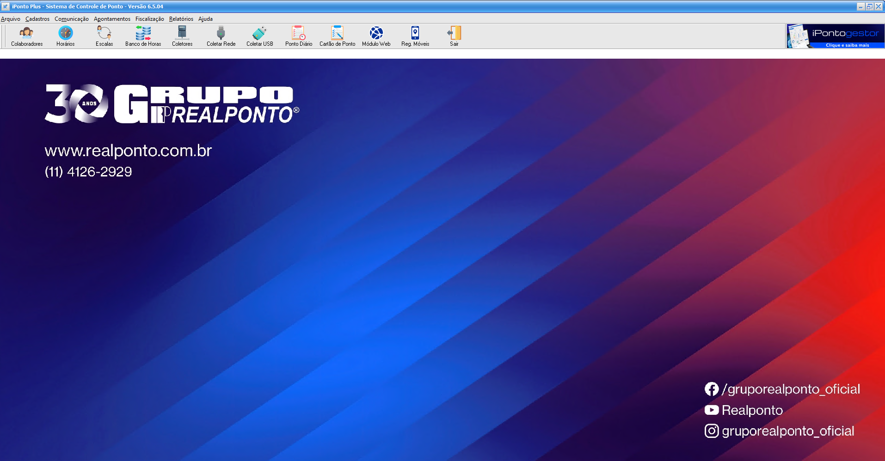

Cadastros e vínculos
Identificação, empresa, setor, horário e coletores reunidos no cadastro do colaborador.
Ver colaboradores →

Conheça o iPonto Plus com a RealPonto. Explore os cadastros, os horários e a conferência das marcações em uma demonstração visual, sem precisar de login.
5 telas para conhecer 10 etapas no tour Sem cadastro
Escolha uma tela ou siga o tour guiado. As explicações aparecem sobre a imagem, próximas da região destacada.
Veja os atalhos para cadastros, coleta e conferência do ponto.

Não foi possível abrir esta captura. Confira sua conexão e tente novamente.
Esta é uma apresentação de telas, não um ambiente de teste. Nomes de colaboradores, empresas e unidades foram substituídos por exemplos; crachás foram alterados e CPF/PIS foram ocultados nas próprias imagens. Não há login, gravação de alterações ou conexão com dados de clientes. Capturas do iPonto Plus 6.5.04; a interface e os recursos podem variar conforme a versão e a contratação.
Entenda onde ficam os cadastros, as configurações de horário e as consultas apresentadas na demonstração.
Identificação, empresa, setor, horário e coletores reunidos no cadastro do colaborador.
Ver colaboradores →Conheça a grade de períodos e a área de parâmetros que aparecem no cadastro de horários.
Ver horários →Compare a consulta diária da equipe com o cartão de ponto de um colaborador no período.
Ver cartão de ponto →Converse sobre a configuração, a orientação de uso e o suporte previstos para sua contratação. Nossa equipe ajuda a avaliar a solução para a sua necessidade.
Conheça o suporte RealPonto →Quantidade de colaboradores, locais de trabalho e equipamentos utilizados.
Defina com a equipe as configurações e orientações necessárias.
Confirme o escopo de suporte e as condições da proposta.
Uma forma de conhecer as telas do iPonto Plus antes de conversar sobre a solução para sua empresa.
Não. A demonstração é pública e não solicita senha, cadastro ou acesso ao iPonto Plus.
Não nesta página. Os cliques navegam entre capturas e explicações. Não existe gravação de dados nem acesso ao sistema real.
Tela inicial, cadastro de colaboradores, horários, ponto diário e cartão de ponto. São cinco telas com destaques e dez etapas guiadas.
Os nomes foram substituídos por exemplos como COLABORADOR DEMO e EMPRESA EXEMPLO LTDA. Crachás foram alterados, CPF e PIS foram ocultados e os nomes das unidades foram substituídos também nas imagens ampliadas.
As capturas são do iPonto Plus 6.5.04. A interface e os recursos podem variar. Confirme com a RealPonto a versão, as condições da proposta e a configuração adequada à sua operação.
Fale com a RealPonto sobre o iPonto Plus e tire suas dúvidas antes de contratar.
Demonstração visual do iPonto Plus preparada para o site da RealPonto. Capturas da versão 6.5.04, com dados de identificação fictícios.